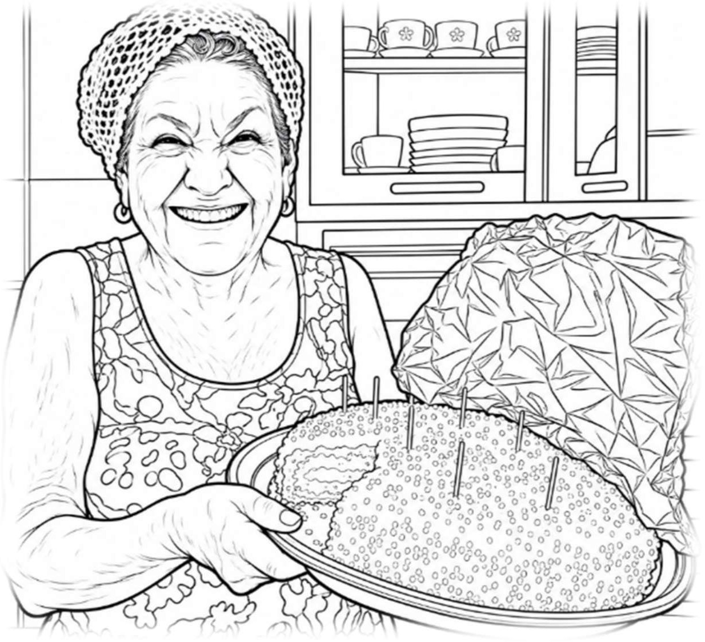

Bolo Caminho do Céu

Ingredientes
3 claras batidas em neve 3 gemas
1 xícara (chá) bem cheia de açúcar 3 colheres (sopa) de margarina
1 vidro de leite de coco (200 ml)
1 vidro de leite de vaca (usar a medida do vidro de leite de coco) 3 xícaras (chá) de farinha de trigo
1 colher (sopa) de Maizena
1 colher (sopa) bem cheia de fermento em pó
Modo de preparo
- Bata as claras em neve.
- Sem parar de bater, acrescente as gemas.
- Adicione o açúcar e depois a margarina.
- Vá colocando o leite de coco e, em seguida, o leite de vaca.
- Acrescente a farinha de trigo e a Maizena.
- Por último, pare de bater e misture o fermento em pó delicadamente.
- Despeje a massa em forma untada e asse em forno preaquecido até dourar.
Cobertura
1 vidro de leite de coco
Açúcar a gosto (até formar uma calda grossa) Modo de preparo da Cobertura
- Coloque o leite de coco em uma vasilha.
- Acrescente açúcar e misture bem até formar uma massa/calda grossa.
- Depois que o bolo estiver assado, espalhe a cobertura por cima.